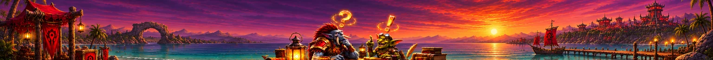

DU HAST FRAGEN?
FAQ
WIR HABEN DIE ANTWORTEN.
Häufige Fragen
Hier findest du Antworten rund um Unreal und unsere Gemeinschaft.
Muss ich ein bestimmtes Mindestlevel haben, um Unreal beitreten zu können?
Nein! Bei uns gibt es keine Levelvoraussetzung. Egal, ob du gerade erst mit deinem Abenteuer beginnst oder schon seit längerer Zeit durch Azeroth ziehst – du bist herzlich willkommen.
Welche Ziele verfolgt die Gilde Unreal?
Wir sind keine Progress-Gilde, aber natürlich möchten wir gemeinsam etwas erreichen und uns weiterentwickeln. Dabei soll der Spaß am Spiel nicht zu kurz kommen. Uns ist wichtig, dass wir als Gemeinschaft vorankommen und jedes Gildenmitglied aktiv ins Gildengeschehen integriert wird.
Muss ich einen bestimmten Spielstil verfolgen?
Nein! Du möchtest raiden, Dungeons laufen, Berufe ausüben, Twinks hochspielen oder lieber das Auktionshaus unsicher machen? Alles völlig in Ordnung. Bei uns musst du niemandem erklären, warum du gerade lieber Kräuter sammelst, statt einen Drachen zu verprügeln.
Muss ich Spielerfahrung mitbringen?
Nein! Wir freuen uns über erfahrene Spieler, Rückkehrer und komplette Neulinge. Jeder fängt irgendwann einmal an und auch alte Hasen können noch etwas dazulernen.
Muss ich eine bestimmte Klasse oder Spezialisierung spielen?
Nein! Spiel das, was dir Spaß macht. Wir schreiben dir weder deine Klasse noch deine Spezialisierung vor.
Muss ich jeden Tag online sein?
Nein! Es ist deine private Zeit, die du ins Spiel investierst. Du entscheidest selbst, wie viel davon du in WoW Forever verbringen möchtest. Wenn du allerdings längere Zeit nicht da bist, wäre eine kurze Info nett. Ein einfaches „Bin drei Wochen im Urlaub“ reicht völlig. Wir führen schließlich keine Vermisstenliste.
Muss ich Discord benutzen?
Discord ist unser zentraler Treffpunkt für Absprachen, Neuigkeiten und gemeinsame Aktivitäten. Für Raidteilnehmer ist Discord Pflicht, damit die Kommunikation während der Raids funktioniert. Ansonsten ist die Nutzung freiwillig. Wir würden uns natürlich freuen, wenn du auch dort vorbeischaust. Schließlich gibt es bei uns nicht nur Bosse zu besiegen, sondern auch den einen oder anderen netten Plausch.
Gibt es bei Unreal Raids?
Ja! Wir planen gemeinsame Raids mit festen Raidterminen. Welche Wochentage es werden, steht allerdings noch nicht fest. Bis dahin sammeln wir erst einmal unsere Kräfte und Ausrüstung.
Muss ich an Raids teilnehmen?
Nein! Raids sind ein Angebot für alle, die Lust darauf haben, aber keine Voraussetzung für eine Mitgliedschaft. Du kannst auch ausschließlich Dungeons laufen, mit anderen questen oder deinen ganz eigenen Interessen nachgehen.
Gibt es Voraussetzungen für die Teilnahme an Raids?
Für Raids gibt es bestimmte Levelvoraussetzungen. Die jeweilige Stufe musst du natürlich erreicht haben, sonst bleiben dir die Raidportale leider verschlossen. Ansonsten wünschen wir uns vor allem gute Laune und etwas Geduld, auch wenn ein Try mal länger dauert, weil dem Heiler mitten im Bosskampf die Katze auf die Tastatur hüpft.
Wie werden Gegenstände und Beute bei Raids verteilt?
Bei Unreal soll Beute fair verteilt werden. Es geht nicht darum, wer den meisten Schaden verursacht oder sich am lautesten bemerkbar macht. Jeder soll die Möglichkeit bekommen, seinen Charakter zu verbessern. Wir möchten vermeiden, dass einzelne Spieler regelmäßig mehrere Gegenstände erhalten, während andere leer ausgehen.
Wie wir das konkret umsetzen, hängt auch davon ab, welches Lootsystem WoW Forever zur Verfügung stellt. Wir setzen dabei auf faire Absprachen untereinander und möchten bewusst auf ein aufwendiges Loot Council verzichten.
Kann ich mit mehreren Charakteren Mitglied werden?
Na klar! Du kannst gerne mehrere Charaktere in die Gilde bringen. Damit wir den Überblick behalten, wäre es schön, wenn du in der Gildennotiz vermerkst, welcher Charakter dein Twink ist. Zum Beispiel „Twink von XY“.
Gibt es eine Probezeit?
Für die Gildenmitgliedschaft gibt es keine Probezeit. Wenn du allerdings merkst, dass Unreal doch nicht die richtige Gilde für dich ist, kannst du natürlich jederzeit weiterziehen. Wir möchten schließlich, dass du gerne bei uns bist und nicht nur deine Mitgliedschaft absitzt.
Ob es für die Teilnahme an unseren Raids eine Probezeit geben wird, müssen wir noch entscheiden. Da WoW Forever für uns alle neu ist, möchten wir erst einmal abwarten, wie sich das Raidleben entwickelt.
Was unterscheidet Unreal von anderen Gilden?
Bei uns bist du nicht einfach nur ein Name in der Mitgliederliste. Wir möchten jedes Gildenmitglied aktiv ins Gildengeschehen einbinden, ganz unabhängig von Level, Vorkenntnissen oder Spielerfahrung. Jeder soll die Möglichkeit haben, sich einzubringen, Anschluss zu finden und Teil unserer Gemeinschaft zu werden.
Wie funktioniert die Aufnahme bei Unreal?
Ganz unkompliziert! Komm einfach auf unseren Discord-Server oder sprich uns direkt im Spiel an. Wir freuen uns darauf, dich kennenzulernen.
Du möchtest Teil von Unreal werden?
Lern uns kennen und komm für ein unverbindliches Gespräch auf unseren Discord-Server.
JOIN DISCORD